Model output shown here is NOT a label. Boxes: orange = deterioration candidate, red = fastener candidate. Blue text = builder proposal, not ground truth. Label in review_sheet.csv (set reviewer + reviewed_at), then rerun tools/report.py.
| image | img-v1.2-reconstructed | img-v1.3.1 |
|---|---|---|
| wc001 locked_test CC BY-SA 4.0 Chris Light source resize: Commons 1280px-wide thumbnail of original (Commons-rendered) | 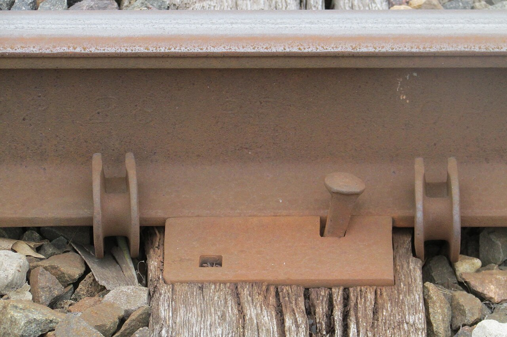 visible tie-surface deterioration: The exposed timber surface below and beside the tie plate shows deep vertical grain cracks, splintered and rough fibres, and weathered grey-brown wood. Several possible missing/displaced fastener: A single spike stands in the slot at the edge of the tie plate. Its head is tilted and appears raised, and its shank angles away from the rail foot rather than possible missing/displaced fastener: The square hole in the tie plate is empty, with no spike or screw visible in it. Some debris or cobweb-like material is visible inside. | possible missing/displaced fastener: A square hole in the steel base plate, left of the one dog spike that is in place, shows bare wood and debris at the bottom and no spike, clip or other fastener |
| wc002 locked_test CC BY-SA 4.0 Trainsandotherthings source resize: Commons 1280px-wide thumbnail of original (Commons-rendered) | 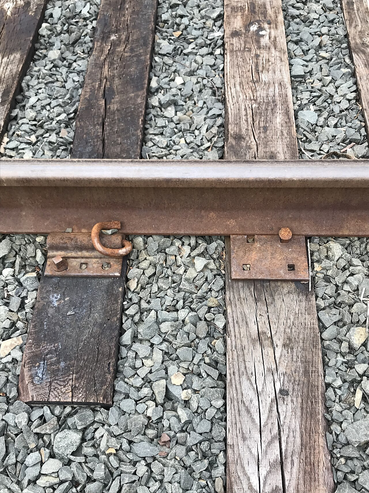 possible missing/displaced fastener: The tie plate on the right has one visible spike or bolt head near the top edge. The other holes in the plate (square holes at the corners and edges) look empty possible missing/displaced fastener: The tie plate on the left shows one hex-headed bolt or spike at its left end and a hook-shaped (J/C-shaped) rusty metal piece on its rail-side edge. The two sma visible tie-surface deterioration: The dark wooden tie at the top has a long vertical crack or split running down its surface. There are also darker, weathered, rough patches along the grain. visible tie-surface deterioration: The lower-right wooden tie has several long vertical cracks and splits along the grain, with a roughened, weathered surface and some darker streaks. visible tie-surface deterioration: The upper-right tie has a thin vertical crack along its surface and a darker knot-like or damaged spot near the top, with weathered, grey-brown wood. | possible missing/displaced fastener: On the left tie plate, a rusty curved hook-shaped metal piece sits against the rail base edge, and it does not look like a standard seated spike or clip. Only o possible missing/displaced fastener: On the right tie plate, only one spike head is visible, near the top edge by the rail. Three square holes in the plate show as empty or dark, and no spikes are |
| wc003 locked_test CC0 Downtowngal source resize: Commons 1280px-wide thumbnail of original (Commons-rendered) | 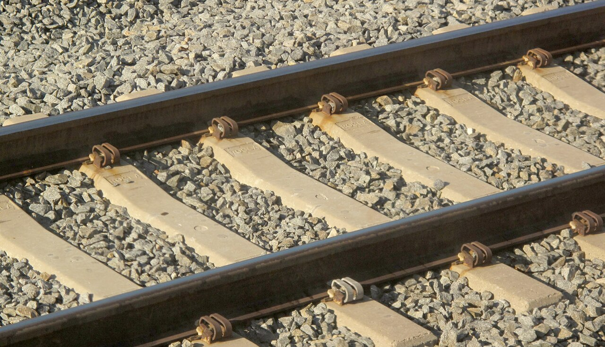 possible missing/displaced fastener: The rail clip near the bottom center looks pale grey/silver, while the other clips in view are rusty brown. It also looks slightly more upright and angular than | no candidate |
| wc004 locked_test CC BY 4.0 Alexander Abair source resize: Commons 1280px-wide thumbnail of original (Commons-rendered) | 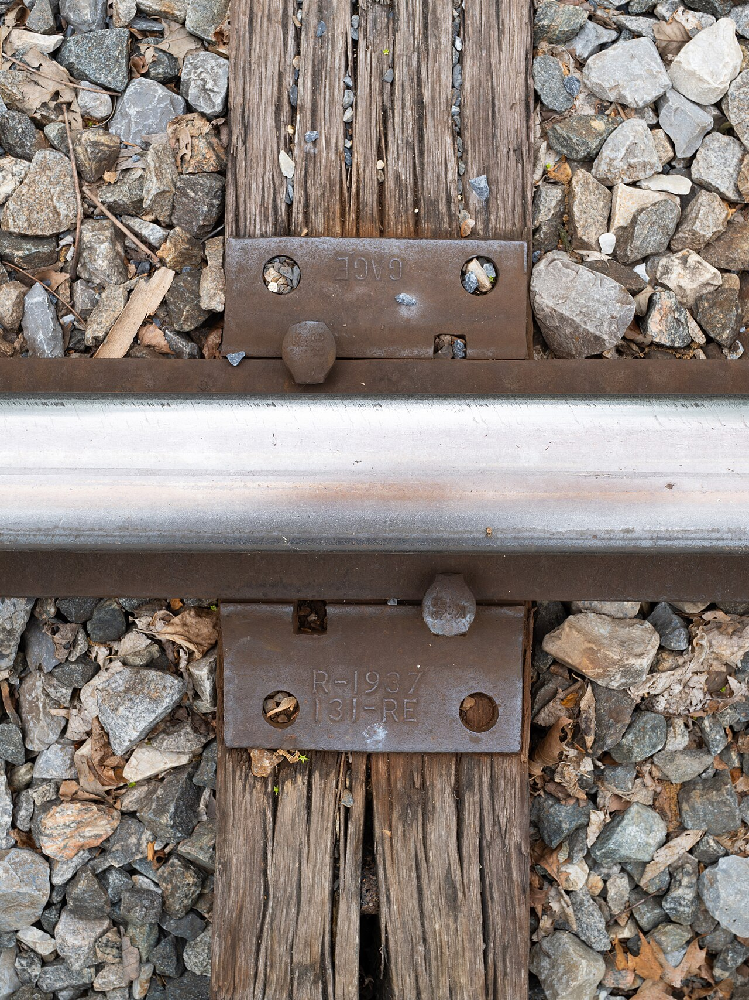 visible tie-surface deterioration: On the lower tie below the lower tie plate, the wood surface shows deep longitudinal cracks. A wide dark split runs down the middle of the tie and widens toward visible tie-surface deterioration: On the upper tie above the upper tie plate, the wood has several parallel vertical splits and rough, weathered grain. Small stones and debris are lodged in the possible missing/displaced fastener: In the upper tie plate, a small rectangular opening near the bottom right edge beside the rail base shows ballast stones. Next to it is a lone round-headed bolt possible missing/displaced fastener: In the lower tie plate, the two round holes in the plate show no visible fastener head. One contains leaf debris and the other looks empty and dark. A small squ | visible tie-surface deterioration: Below the lower tie plate, a vertical split runs down the wood. It opens to a dark gap at the bottom of the frame, and the wood on both sides is fibrous and rou possible missing/displaced fastener: The lower tie plate has round holes at its lower left and lower right, plus a small rectangular slot at the upper left. The holes show stones, leaf bits or bare possible missing/displaced fastener: The upper tie plate has two round holes near its top edge and a small rectangular slot near the bottom right. All three contain ballast stones or debris, and no |
| wc005 locked_test CC BY 4.0 Alexander Abair source resize: Commons 1280px-wide thumbnail of original (Commons-rendered) | 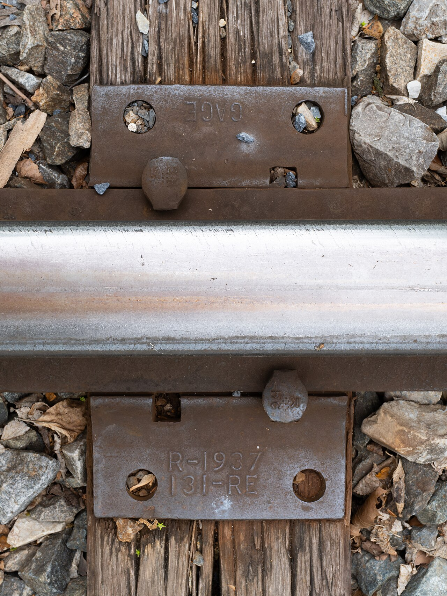 possible missing/displaced fastener: A round hole in the lower tie plate, on the field side away from the bolt head, shows no spike or fastener head. Only a brownish, wood-like surface and a small possible missing/displaced fastener: A round hole in the upper tie plate is filled with loose ballast stones and no spike head is visible. A second round hole on the same plate looks similar. possible missing/displaced fastener: A rectangular notch or slot at the edge of the lower plate near the rail base is filled with leaf litter and dark debris. No fastener hardware is visible in it. visible tie-surface deterioration: The exposed wood above the upper plate is grey-brown and weathered. Many lengthwise grain lines and splits run along it, and the surface looks rough and fibrous visible tie-surface deterioration: The wood below the lower plate shows long vertical splits and a dark narrow gap or crack running along the grain, with a rough, worn surface. | possible missing/displaced fastener: On the upper tie plate, both round holes near the plate ends show ballast stones and debris inside. No spike or screw head is visible in either hole. possible missing/displaced fastener: On the lower tie plate, the two round end holes appear to have no spike or screw head in them. The left hole holds ballast and leaf debris. The right hole shows |
| wc006 locked_test CC BY 4.0 Alexander Abair source resize: Commons 1280px-wide thumbnail of original (Commons-rendered) | 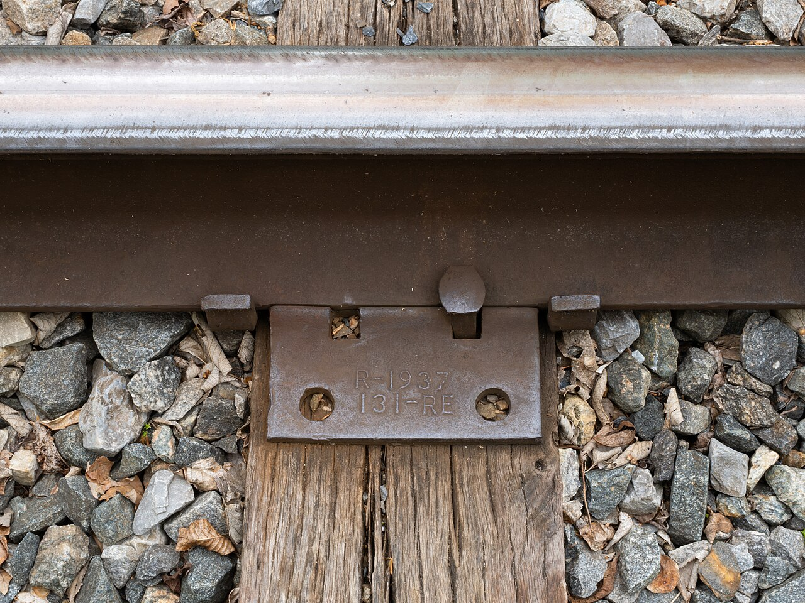 possible missing/displaced fastener: The square notch at the upper left of the tie plate, beside the rail base, looks empty. Small stones and debris show inside it, and no spike head or shank is vi possible missing/displaced fastener: Two round holes near the bottom edge of the tie plate show no bolt, spike or screw. Each has stones or debris visible inside it. visible tie-surface deterioration: The wooden tie below the plate has several long grain-parallel cracks. One prominent split runs roughly down the middle of the exposed surface, and the wood loo | possible missing/displaced fastener: Two round holes in the lower part of the metal plate show no spike or fastener head in them. Small stones and debris are visible inside the openings. possible missing/displaced fastener: A small square notch on the plate edge next to the rail base, on the left of the one spike head that is visible, shows no spike. It contains debris. |
| wc007 locked_test CC BY-SA 4.0 Chris Light source resize: Commons 1280px-wide thumbnail of original (Commons-rendered) | 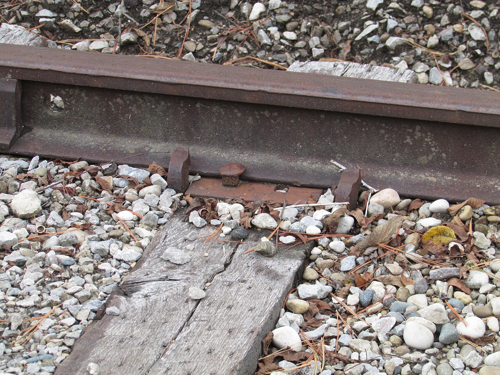 visible tie-surface deterioration: The weathered grey wooden tie in the foreground has a long lengthwise crack or split running along its top surface, with rough, fibrous, checked wood near the u possible missing/displaced fastener: At the rail base there is a rusty flat plate with one visible spike head and a small slot or hole beside it. Two rusted, upright clip-like or hook-shaped pieces | visible tie-surface deterioration: The wooden tie in the lower foreground has a long dark crack running down its length, from near the top-left edge toward the bottom. The crack looks open and wi possible missing/displaced fastener: On the rusty tie plate beside the single visible spike head, a small slot or hole in the plate appears to have no spike in it. |
| wc011 locked_test CC BY-SA 4.0 Joeyfeets source resize: Commons 1280px-wide thumbnail of original (Commons-rendered) | 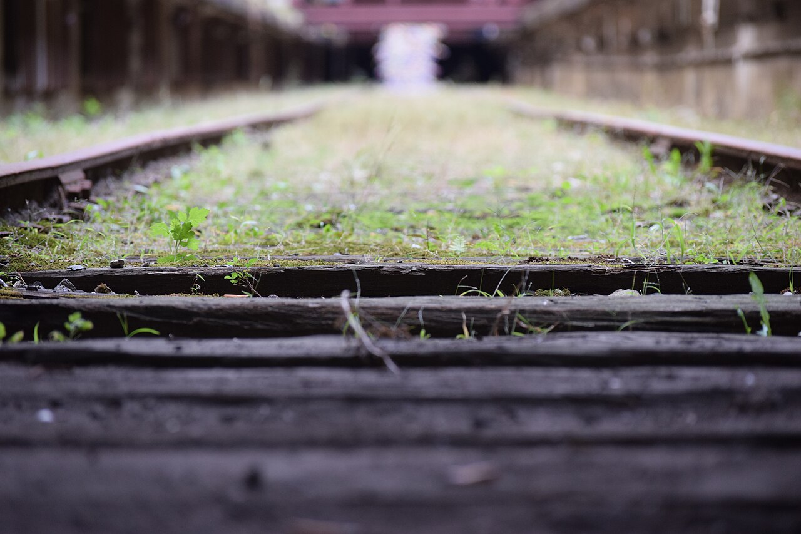 visible tie-surface deterioration: The foreground wooden tie surface shows pronounced longitudinal cracks and splits, with a rough, weathered, grey-black grain and raised fibres running across th visible tie-surface deterioration: The second tie, further back, has a rough, uneven top edge with dark gaps. Moss, grass and small plants grow on and along its surface, and some debris sits on i possible missing/displaced fastener: Near the left rail base there is a rusty, irregular object, possibly a plate or clip fragment, sitting oddly against the rail. It is out of focus, so it is uncl | cannot assess: The photo is a very low-angle shot with a shallow depth of field. Only the foreground tie surface is sharp, and it is seen at a grazing angle. The rails and any fastener positions are distant, blurred, or partly hidden by vegetation, so fastenings cannot be judged. The sharp foreground tie shows only grey weathered grain and surface checking, which is not flagged under the rules. |
| wc012 locked_test Public domain Powerkites16 source resize: Commons 1280px-wide thumbnail of original (Commons-rendered) | 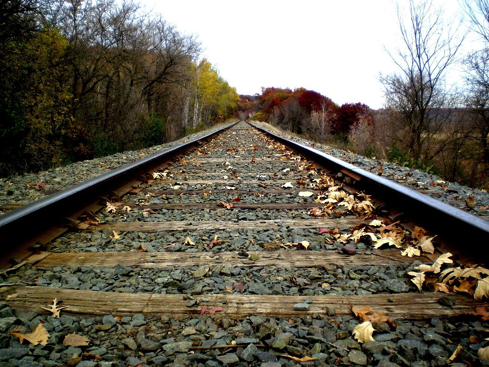 visible tie-surface deterioration: The nearest wooden tie has a gray-brown, rough surface with long lengthwise grain lines and what look like cracks or splits. Some edges look frayed or worn. visible tie-surface deterioration: The second tie from the camera has a weathered, bleached surface with streaky grain and some darker patches along its length. Rough texture is visible near its possible missing/displaced fastener: On the right-hand rail, the rail base and tie-plate area are largely covered by dry leaves and debris. Fasteners cannot be seen clearly there, so the area is fl | no candidate |
| wc013 locked_test CC BY 2.0 cogdogblog source resize: Commons 1280px-wide thumbnail of original (Commons-rendered) | 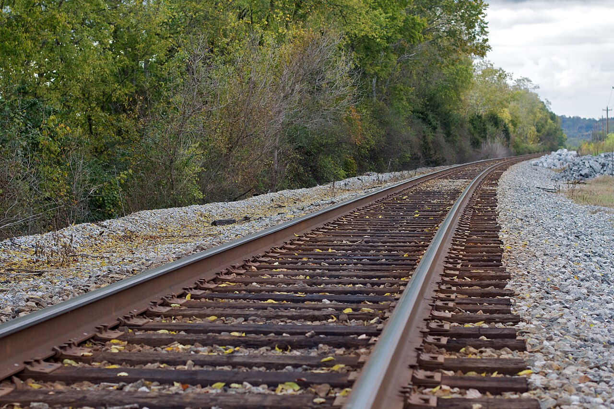 visible tie-surface deterioration: The nearest ties at the bottom-left are dark and rough, with pronounced lengthwise grain lines and what look like darker streaks or splits along the top surface visible tie-surface deterioration: On the right-side foreground ties, near the rail, the wood looks dark and uneven. Leaves and debris partly cover the surface, and some darker patches sit next t | no candidate |
| wc014 locked_test CC BY 2.0 Marc A. Hermann / MTA source resize: Commons 1280px-wide thumbnail of original (Commons-rendered) | 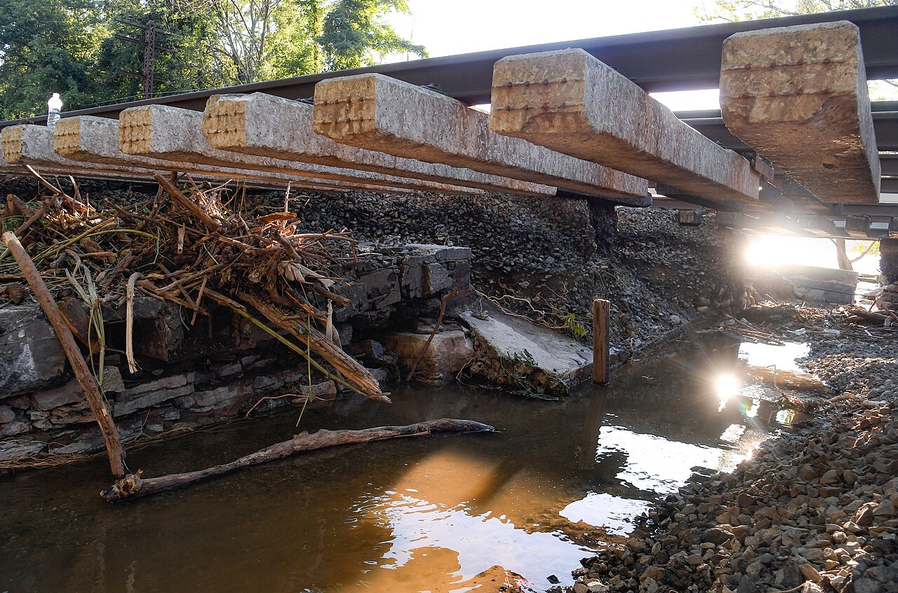 visible tie-surface deterioration: The end and underside of the large timber at the upper right show vertical cracks or checks in the end face, rough and weathered grain, and a row of rust-colour visible tie-surface deterioration: The end faces of several timbers in the upper middle show blocky, cracked or checked end grain, and the side faces look pale, rough and weathered. Some rust-col | cannot assess: The photo is taken from low down and to the side, looking at the underside and ends of the ties. The fastener positions (clips, spikes, plates) on the tie tops are not clearly in view, so fastenings cannot be judged. Strong backlight and lens flare on the right, plus debris and shadow, limit the view of the tie surfaces. The visible tie sides and ends show grey weathering and end checking, and none of the clearly in-scope features. This is not a finding of no issues, and a human should review the full image. |
| wc017 locked_test CC BY-SA 4.0 Xnatedawgx source resize: Commons 1280px-wide thumbnail of original (Commons-rendered) | 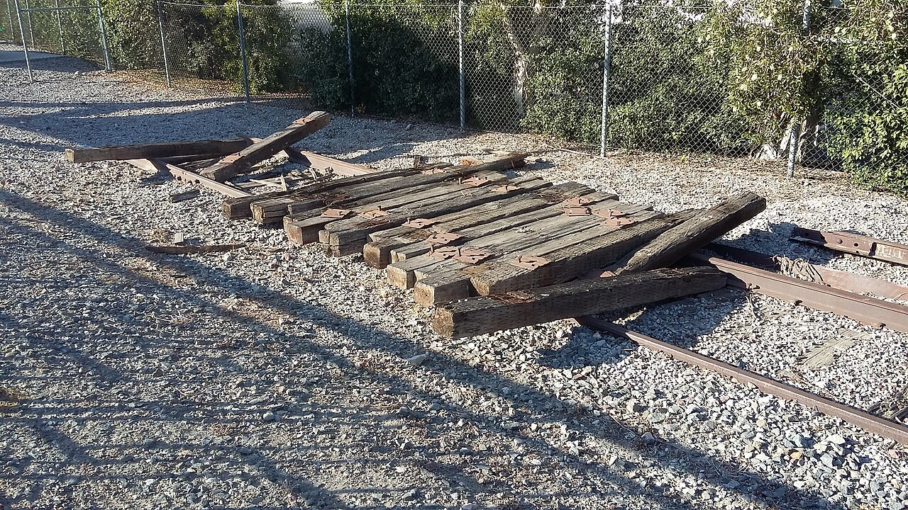 visible tie-surface deterioration: The front timber in the foreground has a rough, weathered top and end face. There are dark linear marks that could be cracks or splits, and a frayed-looking end visible tie-surface deterioration: The angled timber at upper left appears to have a rough, splintered or broken-looking end and a pale, uneven surface. visible tie-surface deterioration: The long, low timber at far left has a greyish, uneven surface with possible lengthwise cracking. possible missing/displaced fastener: Several orange-brown tie plates are visible on the tops of the stacked timbers. At this angle and distance I cannot see whether spikes or other fasteners are pr | cannot assess: The photo mainly shows a loose pile of removed wood ties lying on ballast, with a few loose pieces scattered to the left, beside short rail sections. They are not in a track position, so there are no in-track fastener positions to check for empty, broken or displaced fittings. Tie surfaces are partly shadowed, foreshortened, or hidden by stacking, which limits judging them. No candidates are reported, and this is not a statement about the condition of any track. |
| wc018 locked_test · supplementary CC BY-SA 4.0 Shadowmeld Photography source resize: Commons 1280px-wide thumbnail of original (Commons-rendered) | 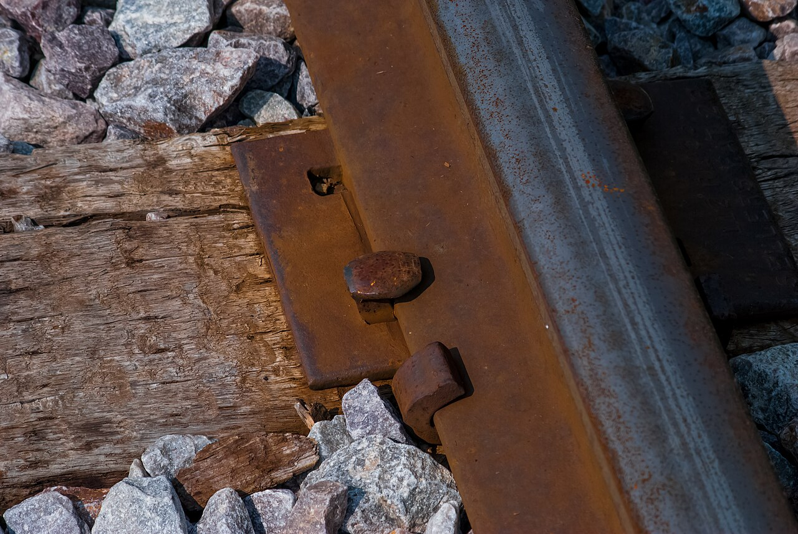 visible tie-surface deterioration: The wooden tie surface on the left shows heavy graining with long cracks and splits running along the wood. Some edges look rough or frayed, and there is a dark visible tie-surface deterioration: At the bottom edge of the tie there is a roughly broken or splintered piece of wood with a jagged outline, lying near the ballast stones. It may be a chipped or possible missing/displaced fastener: On the upper part of the tie plate there is a dark notch or hole near the plate edge, with no fastener head visible in it. Other holes on the plate seem to hold possible missing/displaced fastener: The lower spike head next to the rail base is sitting at an angle and looks slightly different in position from the upper spike. It appears to stand a little pr | possible missing/displaced fastener: On the upper-left edge of the tie plate beside the rail base there is a notch or hole with a dark, debris-filled interior and no spike head visible. Other spike visible tie-surface deterioration: A long, dark horizontal gap runs across the upper-left part of the wooden tie, parallel to the grain. Small stones or debris are visible inside the gap, and the |
| wc020 locked_test CC BY-SA 4.0 Nathan Dimartino source resize: Commons 1280px-wide thumbnail of original (Commons-rendered) | 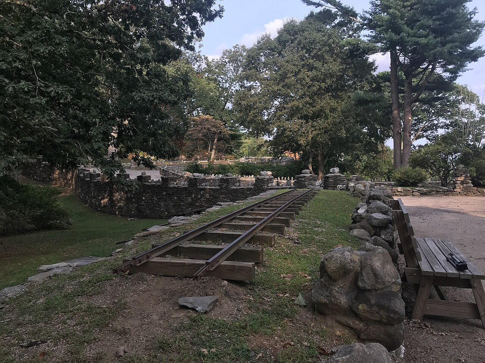 cannot assess: The rail-to-tie fastening points are too small and low-resolution to judge, and the angle is oblique. Grass and soil partly cover the tie ends, and the farther ties are very distant. The near tie surfaces are visible, but I cannot reliably tell fasteners from shadow or rail-base detail. The track also looks like a small-scale, landscaped section with a fastening design I cannot identify, so I cannot make a dependable review of either category. | cannot assess: The fastenings (spikes, clips, plates) are too small and too oblique to resolve, so empty or displaced fastener positions cannot be judged. The ties are only partly visible at a low angle, with some surfaces hidden by the rails, grass and soil. The track also looks like a short narrow-gauge or display section with lumber-style ties and a non-standard fastening design, so the expected fastener positions are unclear. No clear splitting, crushed or broken sections, plate cutting, missing chunks or rot cavities are visible in the parts of the ties that can be seen, but this is not an assessment of the track. Text and objects elsewhere in the scene (bench, stone walls, trees) are out of scope. |
| wc021 locked_test · supplementary CC BY 3.0 Treetale source resize: Commons 1280px-wide thumbnail of original (Commons-rendered) tie_deterioration=present? (fungus growing on tie end) | 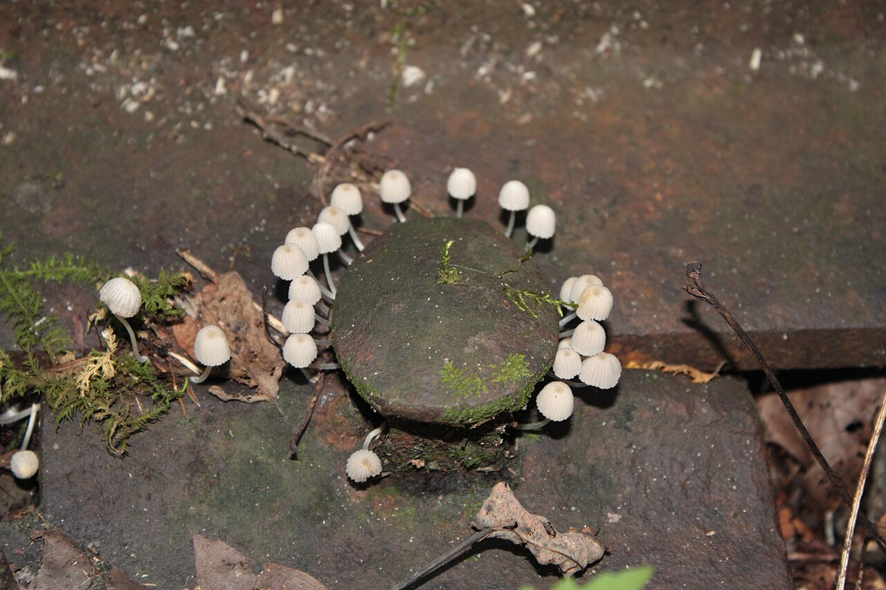 cannot assess: The photo is a close view of small white mushrooms, moss, and leaf litter on a dark, rust-stained flat surface around a rounded mossy object. No rail, tie plate, spike, clip, or other fastening hardware can be identified, and it is not clear that the surface is a railway tie. Biological growth and debris cover most of what is visible, so a tie surface or fastener cannot be judged from this view. | cannot assess: The photo is a close-up of small white mushrooms growing around a moss-covered rounded object, on a dark, rust-stained surface with leaf litter and moss. It is unclear whether this is a wood tie or track at all. No clear fastener position (clip, spike or plate) and no identifiable tie surface can be judged, so neither allowed category can be evaluated. |
| wc022 locked_test CC BY 2.0 Metropolitan Transportation Authority of the State of New Yo source resize: Commons 1280px-wide thumbnail of original (Commons-rendered) | 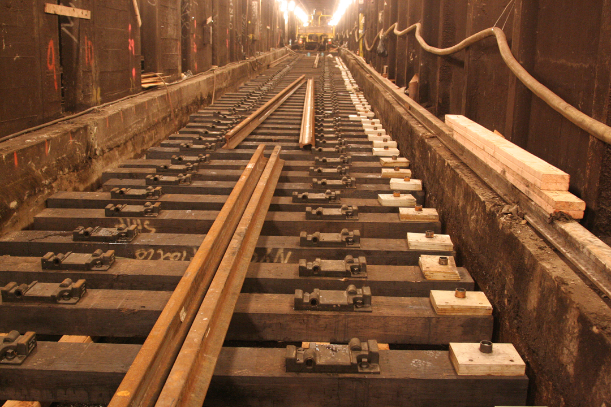 possible missing/displaced fastener: Several dark metal plate assemblies on the left side of the ties have no rail sitting in them and no clearly visible clips or hold-down hardware. Two loose-look possible missing/displaced fastener: A plate assembly near the lower center has no rail seated in it. The two loose rails in the foreground run to the left of it, and no clips are clearly visible. | no candidate |
| wc023 locked_test CC BY 2.5 Humberto, Mex. source resize: Commons 1280px-wide thumbnail of original (Commons-rendered) | 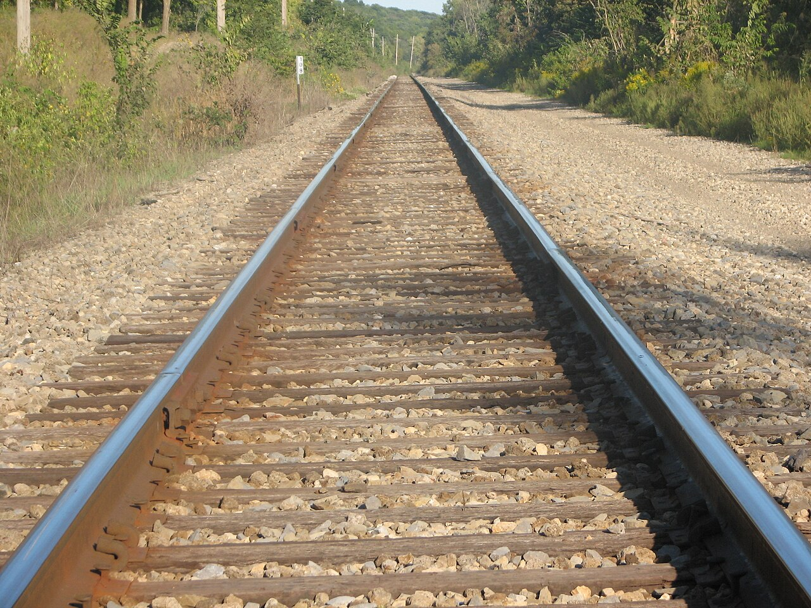 cannot assess: The photo is taken from a very low angle along the rail, so most tie tops are seen edge-on and are partly covered by ballast stones. The rail bodies hide the fastening areas. The right-hand rail base and its fastenings are in deep shadow or blocked from view, and the ties become too small to judge toward the distance. Fastener presence and tie-surface condition cannot be judged reliably from this view. This is not a finding about the track either way. | cannot assess: The photo is taken from a very low angle along the rail head. Tie plates, clips and spikes are hidden by the rail and the grazing view. Most tie surfaces are foreshortened into thin strips and partly covered by ballast stones, and the far ties are too distant. Fastener positions and tie-surface condition cannot be judged reliably from this view. |
| wc025 locked_test · supplementary CC BY 2.0 Larry from Charlottetown, PEI, Canada source resize: Commons 1280px-wide thumbnail of original (Commons-rendered) cannot_assess? (vegetation-covered abandoned ties) | 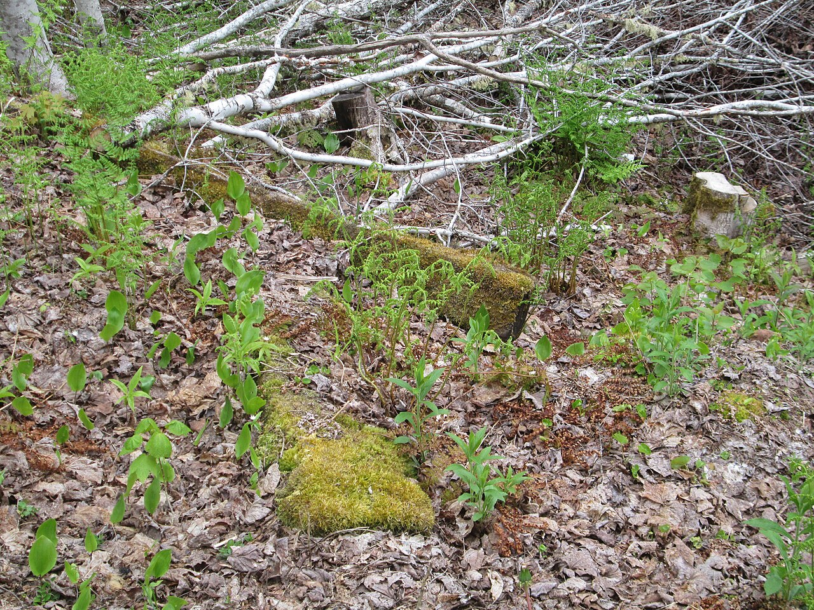 cannot assess: The photo shows a forest floor with leaf litter, ferns, and low plants. A moss-covered elongated object, possibly a log or an old timber, lies in the middle. No rails, fastening hardware, or identifiable tie surfaces are visible. Moss and vegetation cover the object's surface, so fasteners and tie condition cannot be judged. | cannot assess: The photo shows a forest floor with leaf litter, ferns, and other vegetation, along with fallen branches and cut stumps. There is a moss-covered log-like object, but no clearly identifiable in-track tie surface or fastener positions (clips, plates, spikes) is in view. Moss and vegetation cover the surfaces, so tie surfaces and fastenings cannot be judged. |
| wc026 locked_test · supplementary CC BY-SA 2.0 edk7 source resize: Commons 1280px-wide thumbnail of original (Commons-rendered) | 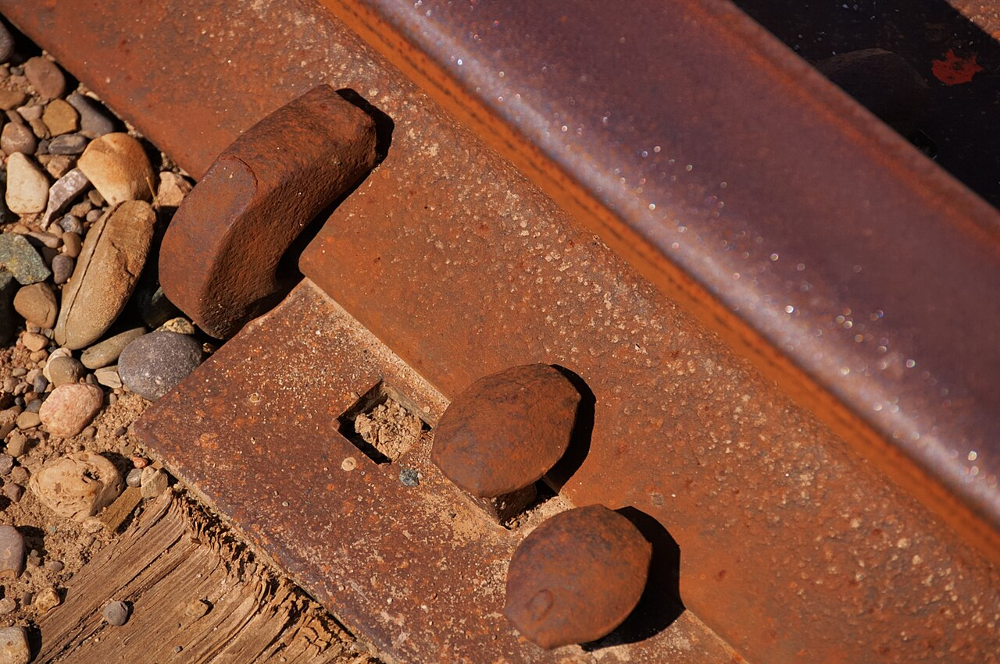 possible missing/displaced fastener: A square hole in the rusty tie plate, next to the spike heads, shows only packed dirt and grit. No spike head or shank is visible in it. visible tie-surface deterioration: In the lower-left corner, the wood tie surface has rough, raised grain with splintered edges and what look like surface cracks or checks running along the grain | possible missing/displaced fastener: A square hole in the rusty tie plate, next to the two visible spike heads, has no spike in it. It looks filled with dirt or ballast fines instead of a spike sha |
| wc027 locked_test · supplementary CC BY-SA 2.0 Ashley Dace source resize: Commons 1280px-wide thumbnail of original (Commons-rendered) tie_deterioration=present? (source caption: 'old sleeper rotting away') | 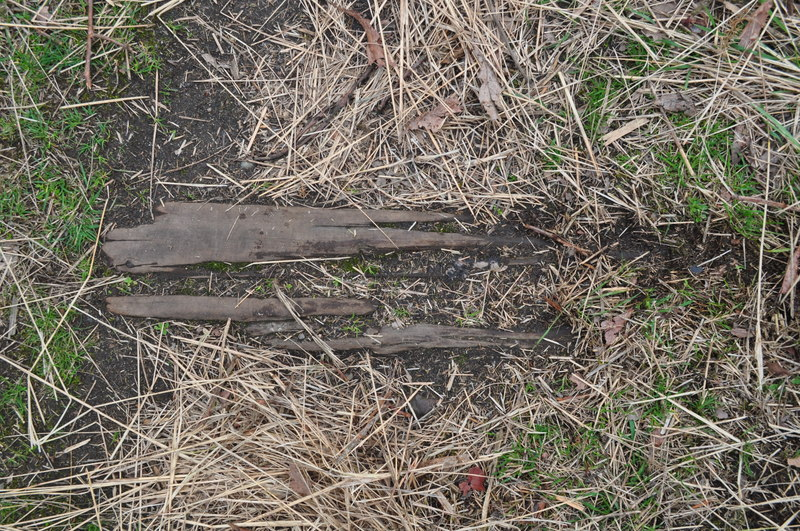 visible tie-surface deterioration: A weathered grey wooden piece lies on dark soil with a split, splintered grain, a ragged broken right-hand end, and a rough, eroded surface. It looks fragmented visible tie-surface deterioration: Two thin, elongated, weathered wooden strips lie end to end on dark soil. Their edges are uneven and broken, and the lengths look splintered and decayed. | visible tie-surface deterioration: Grey weathered timber lies on dark soil among dry grass. It appears as long, narrow strips that are separated from each other, with ragged, splintered ends and |
| wc028 locked_test · supplementary CC BY-SA 3.0 Spoorjan source resize: Commons 1280px-wide thumbnail of original (Commons-rendered) missing_or_displaced_fastener=present? (source caption: 'afgebroken bevestiging' = broken fastening) | 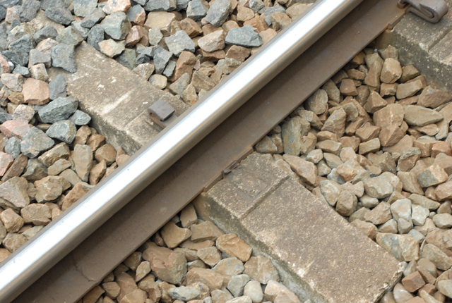 possible missing/displaced fastener: On the lower tie, where it meets the rail, no clip, insulator or similar small dark hardware is visible on the exposed concrete surface. The upper tie, by contr visible tie-surface deterioration: The far end of the lower concrete tie has a rough, uneven top surface with a stained, mottled tone and a ragged, worn-looking edge against the ballast. | no candidate |
| wc029 dev · supplementary CC BY-SA 2.5 Per Erik Strandberg sv:User:PER9000 source resize: Commons 1280px-wide thumbnail of original (Commons-rendered) | 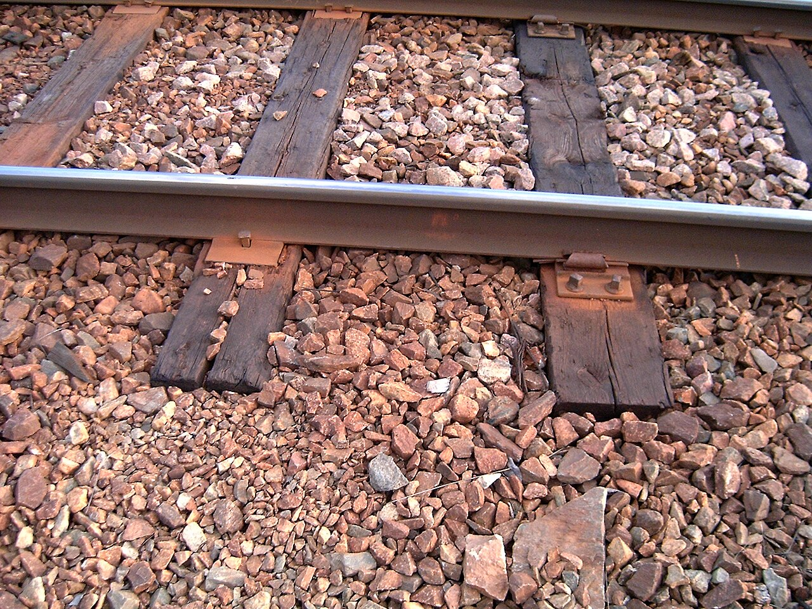 possible missing/displaced fastener: On the near-left tie plate, only one stud or bolt head is clearly visible near the top-left of the plate. The other fastening position is not clearly visible. T visible tie-surface deterioration: The near-right tie has long lengthwise cracks in the wood and a rough, weathered grain with dark patches on its top surface. visible tie-surface deterioration: The near-left tie appears split or separated lengthwise, with a dark gap or crack running along the tie and rough, frayed edges. visible tie-surface deterioration: The far dark tie has a long lengthwise crack and rough, grainy, weathered patches on its top surface. visible tie-surface deterioration: The far middle tie has several lengthwise cracks, and its grain looks rough and weathered. | visible tie-surface deterioration: On the lower-left tie under the rail, a dark lengthwise line divides the wood into two strips. A gap between them may run through the tie, with stones visible a |
| wc030 locked_test · supplementary CC BY-SA 4.0 Marcus Wong Wongm source resize: Commons 1280px-wide thumbnail of original (Commons-rendered) | 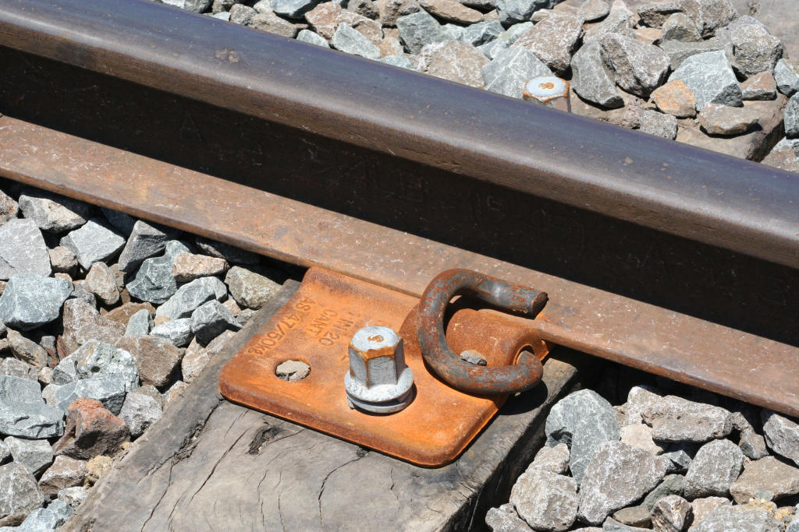 possible missing/displaced fastener: A round hole in the left part of the rusty tie plate has no bolt or spike in it. A small light-grey stone-like object sits inside the hole. possible missing/displaced fastener: A rusty hook- or loop-shaped metal piece sits on the plate next to the rail foot. From this angle it is not clearly seen gripping the rail base, and its seating visible tie-surface deterioration: The wooden tie surface in the foreground shows grey weathered grain with several visible cracks or splits running along and across the wood. There is dark stain | possible missing/displaced fastener: The left hole in the orange base plate has no bolt, spike or clip in it. A small pale stone or ballast fragment is visible in or under the hole. The other hole |
| wc031 locked_test · supplementary CC BY-SA 4.0 Marcus Wong Wongm source resize: Commons 1280px-wide thumbnail of original (Commons-rendered) | 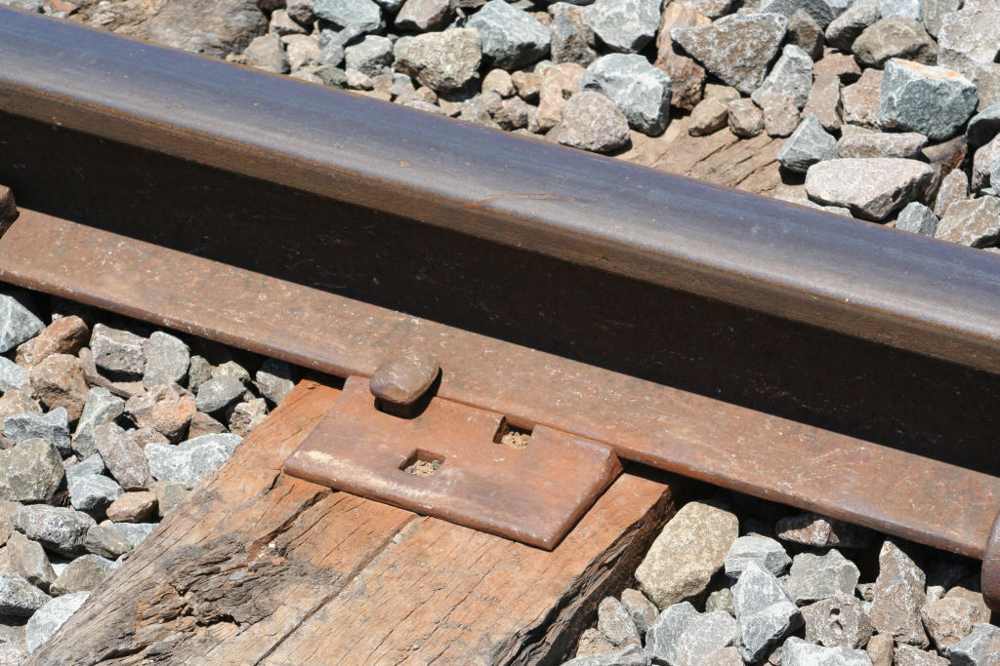 possible missing/displaced fastener: The steel tie plate under the rail shows two square holes with only small amounts of light-coloured debris or soil inside and no spike or screw visible in eithe visible tie-surface deterioration: The wooden tie surface at the lower left has dark, rough, uneven patches with deep cracks and what looks like surface breakup or splintering. Long grain checks visible tie-surface deterioration: Longitudinal cracks and grain splitting run across the tie face to the right of the plate, ending at a dark, rough edge near the ballast. | possible missing/displaced fastener: Two square holes in the rusty tie plate beside the rail base show only pale dirt or dust at the bottom, with no spike or fastener visible in them. A rounded spi visible tie-surface deterioration: At the lower-left end of the tie there is a darker, rough, crumbly-looking patch of wood with deep grooves and what may be a shallow cavity or loss of surface m |
| wc032 locked_test · supplementary CC BY-SA 3.0 No machine-readable author provided. Tano4595 assumed (based source resize: Commons 1280px-wide thumbnail of original (Commons-rendered) | 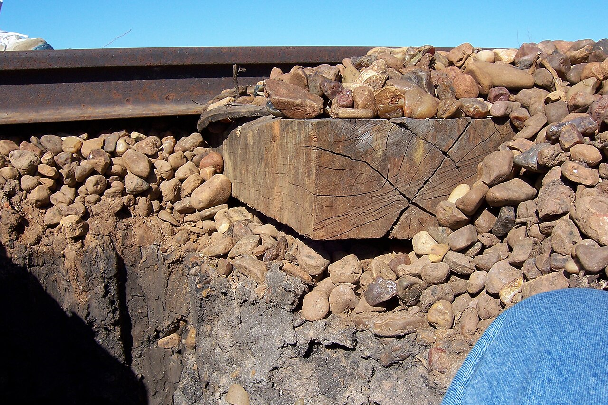 visible tie-surface deterioration: The exposed end face of the wooden tie shows many radial and branching cracks. One long dark crack runs diagonally across the face, with finer checks around it. visible tie-surface deterioration: The left side face of the tie looks rough, with weathered grain and some fine dark lines running along it. Part of the surface is dark and stained near the rail possible missing/displaced fastener: At the junction of the rail base and the tie top, a dark curved object lies partly under ballast stones. I cannot see a clear plate, spike or clip seated on the | no candidate |
| wc033 locked_test · supplementary CC BY-SA 2.0 Nickolas Titkov from Moscow, Russian Federation source resize: Commons 1280px-wide thumbnail of original (Commons-rendered) | 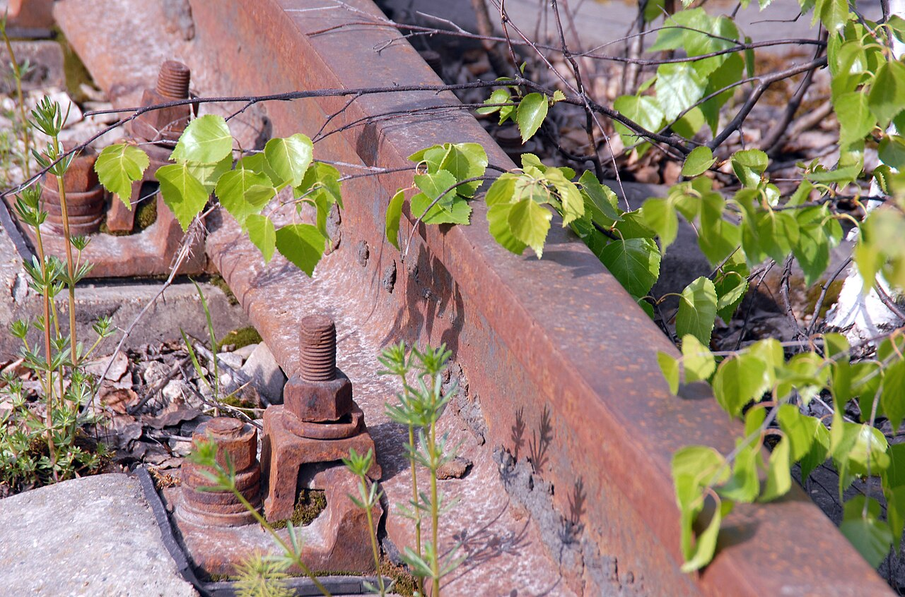 possible missing/displaced fastener: At the lower left, a rusty stacked cylindrical assembly (looks like a nut or washers) sits beside the neighbouring bolt. The neighbouring bolt has a clearly vis | no candidate |
| wc034 locked_test · supplementary CC BY-SA 2.0 Nickolas Titkov from Moscow, Russian Federation source resize: Commons 1280px-wide thumbnail of original (Commons-rendered) | 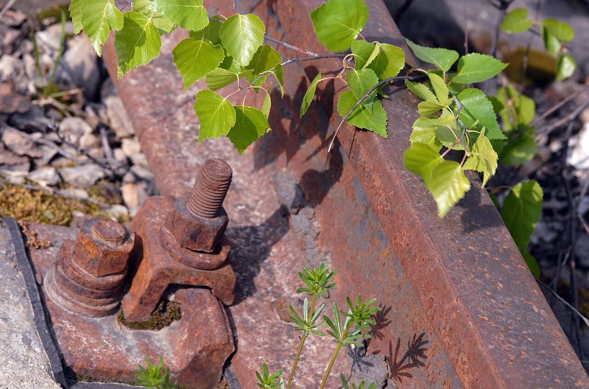 possible missing/displaced fastener: Close-up of a heavily rusted rail-base fastening. The bolt on the right has its threaded end sticking up with no visible nut on top. The rusty clamp or clip pie | cannot assess: This is a close-up of a single rusted rail section on a metal base plate with a bolt, nut and clamp. No tie surface is in view, so tie deterioration cannot be judged. Only one fastening position is visible and the surrounding fastening positions are out of frame. Leaves, plants and shadows partly occlude the rail and ballast. Nothing in view falls clearly into either allowed category, but the image is too limited for a meaningful review of ties or fastenings. |
| wc035 locked_test CC BY-SA 4.0 Dietmar Rabich source resize: Commons 1280px-wide thumbnail of original (Commons-rendered) | 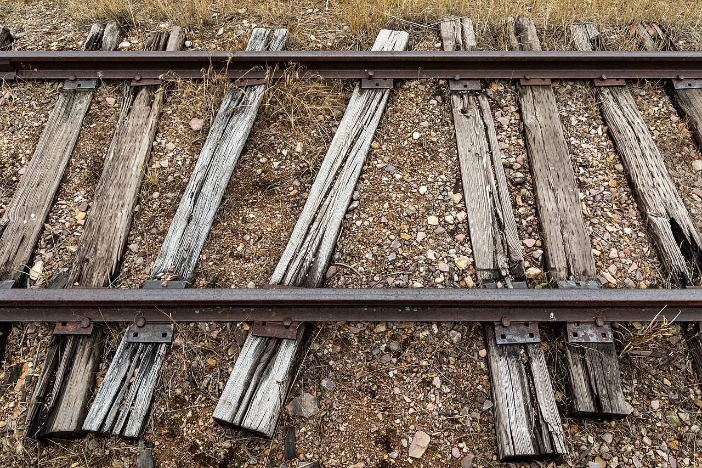 visible tie-surface deterioration: The grey, weathered tie in the upper centre shows long lengthwise cracks and splits. The grain looks opened up and fibrous, and the surface is rough and fragmen visible tie-surface deterioration: The tie at the right edge has a splintered, frayed end with a dark void or gap near its lower right. The surface shows several split lines. visible tie-surface deterioration: The tie has a split or lifted section along its length, with a layered, peeling look toward the lower end near the rail. visible tie-surface deterioration: The tie below the lower rail has a stringy, splintered surface with several parallel splits. The wood looks separated into strands. visible tie-surface deterioration: The tie below the lower rail near the left has a rough, splintered surface with lengthwise splits and a ragged end. possible missing/displaced fastener: The tie plate and fastening on this tie at the lower rail appear to sit toward the edge of the tie, and no clear spike or bolt heads are seen on it. The plate l | visible tie-surface deterioration: The end of the tie at the far right edge looks broken and ragged. There is a dark gap or cavity with a jagged, missing-chunk outline. visible tie-surface deterioration: The tie under the lower rail is split lengthwise into several splintered strips. The splits look deep and open near the rail seat and the lower end. visible tie-surface deterioration: The tie under the lower rail on the left shows open longitudinal splitting and frayed, splintered wood. The strips look separated near the plate area. visible tie-surface deterioration: The long tie in the upper centre has a deep, open split running along much of its length. The lower end is frayed and splintered. |
| wc036 locked_test CC BY-SA 4.0 Dietmar Rabich source resize: Commons 1280px-wide thumbnail of original (Commons-rendered) | 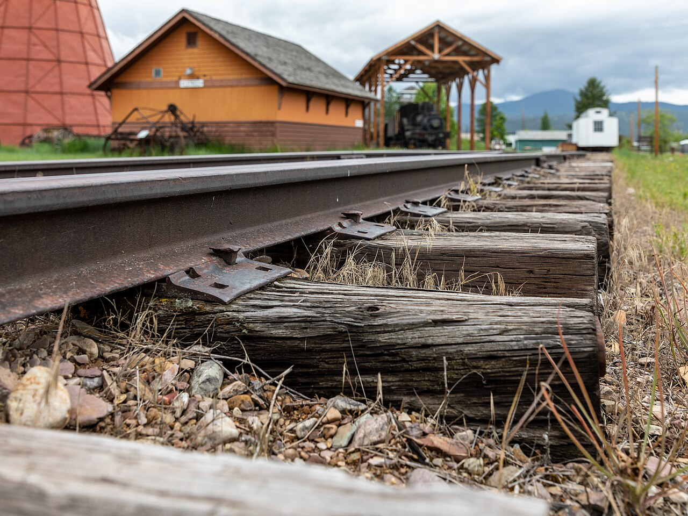 visible tie-surface deterioration: The side face of the nearest wooden tie shows pronounced lengthwise grain cracking (checking), a grey weathered surface, and rough, fibrous texture. A small dar visible tie-surface deterioration: The blurred out-of-focus tie or timber in the bottom foreground is pale grey with coarse grain and what look like surface splits. visible tie-surface deterioration: The upper face of the second tie has grey, rough, grainy wood with dry grass growing against and over part of it, and the surface is partly hidden. | no candidate |
| wc037 locked_test · supplementary CC BY-SA 2.0 OLU source resize: Commons 1280px-wide thumbnail of original (Commons-rendered) tie_deterioration=present? (source caption: sleepers rotting) | 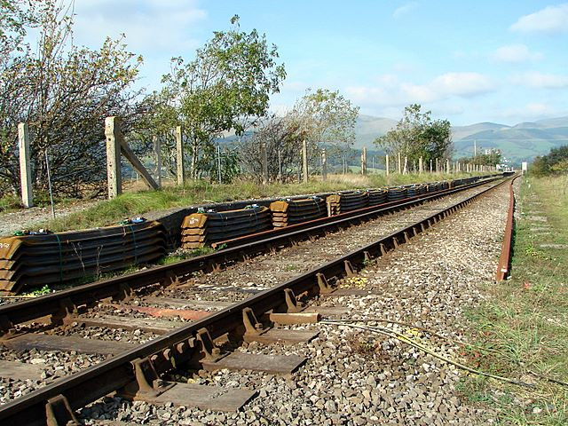 visible tie-surface deterioration: The wooden tie surfaces at the lower left look grey and rough, with dark streaks and what may be surface checking between the rail chairs. Ballast stones partly visible tie-surface deterioration: The tie in the near foreground between the chairs has a worn, uneven grey surface with a darker patch near the chair base. This could be surface wear or splitti | cannot assess: The photo is taken at a low, oblique angle along the track. Most tie surfaces are partly covered by ballast, and the fastenings beyond the first few feet in the foreground are too distant and foreshortened to judge. Only a few chairs and tie ends are visible, and none show a clearly empty, broken or displaced fastening position or clear tie-surface damage. This is not a finding that anything is absent. A human reviewer would need closer, top-down photos. |
| p1-tie_disintegrated dev · supplementary CC BY-SA 4.0 Hp.Baumeler source Commons 1280px thumbnail tie_deterioration=present? (Phase-1 positive) | 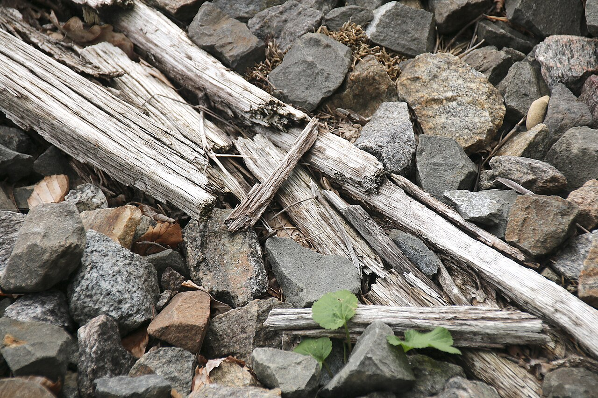 visible tie-surface deterioration: Large gray-white wooden member in the upper left with a heavily weathered surface. Pixels show deep lengthwise grain cracks, raised splintered fibers and a fray visible tie-surface deterioration: Cluster of thin, splintered wood strips and slivers in the center, with fibers separated into stringy layers and pieces lying at different angles. A narrow shar visible tie-surface deterioration: Long, weathered wooden piece running diagonally toward the lower right, with a gray, checked and cracked surface. A separate flat plank-like piece lies across t | visible tie-surface deterioration: Grey weathered timber pieces lie across the ballast. Several are visibly broken apart: long splinters, a snapped sliver angled across the middle, frayed and fib |
| p1-tie_old_rotten dev · supplementary CC BY-SA 2.5 Per Erik Strandberg (sv:User:PER9000) source Commons 1280px thumbnail | 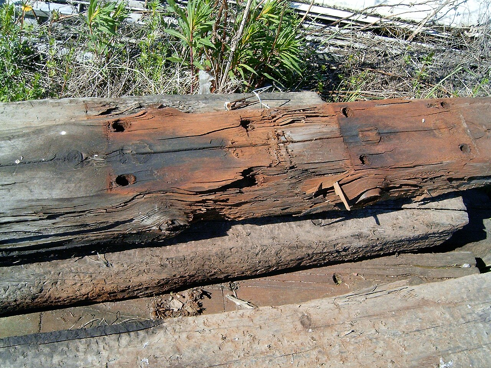 visible tie-surface deterioration: The upper timber surface shows heavy splitting and checking, with the wood grain peeling into thin layers. There is rough, eroded texture and dark patches. Rust visible tie-surface deterioration: Near the lower edge of the upper timber, wood fibers are lifted into splintered flakes and slivers, and there is an irregular broken edge with a dark cavity. possible missing/displaced fastener: Several round dark holes sit in the upper timber surface, and a faint rectangular plate-shaped outline is visible toward the right. No spikes or screws are seen | visible tie-surface deterioration: On the top tie, the surface around and below the plate seat looks broken up. Wood layers are peeling and splintered, with a cavity-like dark hollow and loose sl visible tie-surface deterioration: Around the plate seat area on the top tie, the wood is heavily rust-stained and the grain looks torn and layered. Several dark round holes and elongated dark vo |
| p1-negative_coledale dev · supplementary CC BY-SA 2.5 Sam Wilson source Commons 1280px thumbnail absent/absent? (Phase-1 negative) | 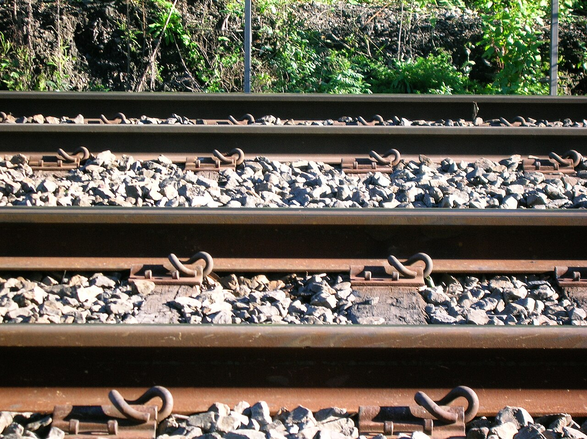 visible tie-surface deterioration: The exposed top of a wooden tie between ballast stones looks grey and rough, with darker streaks and what may be fine lengthwise lines. The surface looks more w visible tie-surface deterioration: The exposed tie top beside a tie plate is dark grey and uneven, with possible cracks or grain breaks near the plate edge and stones pressing against it. | no candidate |
| p1-obscured_coledale_blurred dev · supplementary CC BY-SA 2.5 Sam Wilson (derivative by RailReady builder) source Gaussian blur r=14, brightness 0.45 cannot_assess? (synthetic blur) | cannot assess: The photo is heavily blurred and dark. Horizontal bands that may be rails and ballast are visible, but the tie surfaces and fastening hardware (clips, spikes, plates) cannot be resolved well enough to judge them. Fine surface texture, cracks and small fastener details are not distinguishable. | cannot assess: The photo is heavily blurred and dark. Rails, ballast and vegetation can be roughly made out, but no individual fastener positions (clips, spikes, plates) or tie surfaces can be resolved well enough to judge them. |
| wc004-blur locked_test CC BY 4.0 Alexander Abair source Gaussian blur r=12 (applied by builder to wc004) | 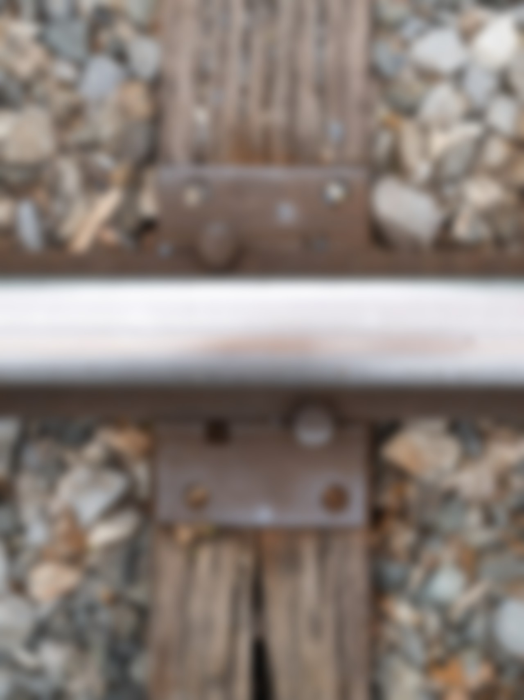 cannot assess: The whole photo is heavily out of focus. Tie-plate holes, fastener heads, clips and the wood grain of the ties are smeared, so I cannot tell whether fasteners are present, displaced or missing, or whether the tie surfaces are cracked, split or decayed. Some dark and rusty-looking areas are visible, for example the dark vertical gap at the bottom center of the lower tie and the small round shapes on the tie plates. At this level of blur they could be a real split, a shadow, a bolt or spike head, an unused hole, or ballast. I cannot reliably tell these apart, so I am not flagging them. A sharper, closer photo is needed for review. | cannot assess: The whole photo is heavily out of focus. Edges of the tie plates, fastener heads and wood grain are smeared, so I cannot reliably tell whether fastener positions are filled, empty, broken or displaced, or whether the tie surface has through-splitting or crushing. A dark vertical gap in the lower tie near the bottom centre and a small dark square on the lower plate cannot be told apart from shadow, ballast gaps or unused spike holes at this sharpness. A sharper, closer re-photograph is needed for review. |
| wc023-dark locked_test CC BY 2.5 Humberto, Mex. source brightness 0.25 (applied by builder to wc023) | 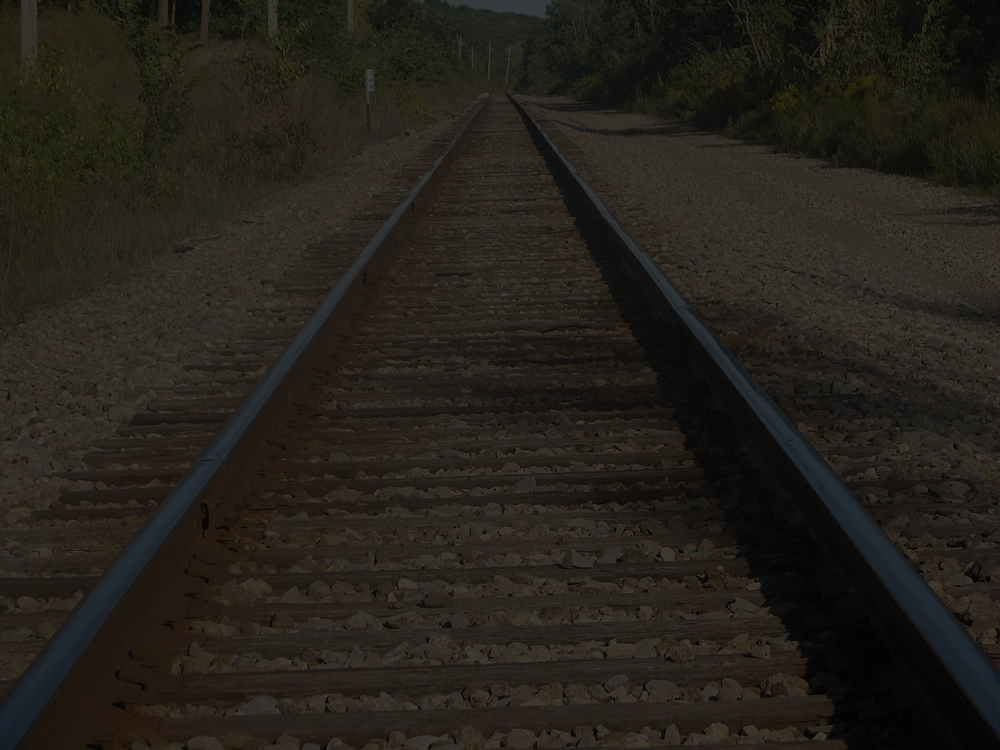 cannot assess: The photo is very dark and taken from a low angle along the rail. The rail base and the fastening points are hidden by the rail itself and by shadow. Most tie surfaces are covered by ballast stones or are too far away or too dim to show surface texture or color. The fastenings and tie surfaces cannot be judged reliably. | cannot assess: The photo is dark and taken at a low, grazing angle along the rail. The ties are mostly covered by ballast and rail shadow, and the rail itself hides the tie plates and fastener positions. Distant ties are too small to judge. Tie surfaces and fastenings cannot be examined reliably. |
| wc001-crop locked_test CC BY-SA 4.0 Chris Light source crop left 50% of width (applied by builder to wc001) | 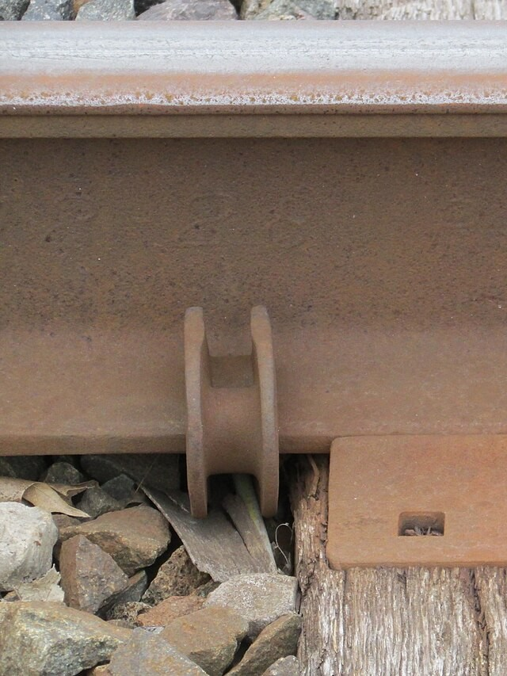 possible missing/displaced fastener: The square hole in the flat steel plate on the right shows no spike or screw head. Only small debris or dried material is visible inside it. The rail foot and a visible tie-surface deterioration: The wooden tie below and beside the plate has a rough, weathered surface with vertical grain lines and what look like splits or checks. The tie edge near the sp visible tie-surface deterioration: Thin, flat, splintered pieces of pale wood lie between the ballast stones next to the spool-shaped object. They may have broken off the tie edge. | possible missing/displaced fastener: The rusty steel tie plate at lower right has a square hole that looks empty. There is a little debris or dried plant matter inside and no spike or clip head vis |


.jpg){kind=link}
.jpg){kind=link}


.jpg){kind=link}

.jpg){kind=link}
.jpg){kind=link}


.jpg){kind=link}
.jpg){kind=link}
,_Fort_Missoula,_Historical_Museum,_Railroad_Track_--_2022_--_2353.jpg){kind=link}
,_Fort_Missoula,_Historical_Museum,_Railroad_Track_--_2022_--_2355.jpg){kind=link}